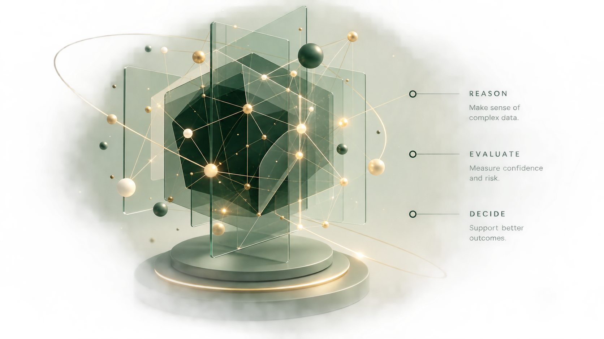

01 BANKING & REGULATION
Banking Compliance Intelligence Agent
An agentic RAG system for reviewing lending documents against regulation, retrieving evidence, evaluating uncertainty and escalating cases when human judgement is needed.
IDEA SYSTEM IMPLEMENTATION INSIGHT
I design and build AI and data solutions that solve real problems in finance, risk and regulation, from intelligent agents to machine learning systems.

TRUSTED
TECHNOLOGIES
02 MY WORK
A closer look at the systems I have built, combining AI, data and domain knowledge to solve real problems in finance, risk and regulation.
01 BANKING & REGULATION
An agentic RAG system for reviewing lending documents against regulation, retrieving evidence, evaluating uncertainty and escalating cases when human judgement is needed.
02 CREDIT RISK
A BNPL risk intelligence platform for thin-file customers, combining modelling, monitoring, explainability and governance around credit decisions.
03 FRAUD DETECTION
A production-style fraud pipeline built around cost-aware decisioning, explainability, champion-challenger testing and drift monitoring.
03 EXPERTISE
A blend of technical expertise, domain knowledge and practical implementation skills.
Data Analysis & ML
Data Modelling
Risk & Fraud
RAG · LLMs
AWS · Azure
ETL · Airflow
Power BI
Finance · Regulation
04 ABOUT
I came to data science through banking. Working in credit risk taught me that behind every score, threshold and model is a decision. That perspective now shapes how I build AI systems: not only whether the model works, but whether the system around it can be evaluated, explained, monitored and trusted.
Read My Story →05 INSIGHTS
Thoughts on AI, data science, regulation and the journey of building real-world systems.
Read Insights →06 CONTACT
I’m open to opportunities, collaborations and conversations about AI, data science and financial risk.
© 2026 Korede Folarin